Networking
Organizations
- Internet Society - ISOC
- Internet Engineering Task Force - IETF
- Internet Architecture Board, IAB
- Internet Engineering Steering Group - IESG
- Internet Corporation for Assigned Names and Numbers - ICANN
- Internet Assigned Numbers Authority - IANA
Standards
- IEEE LAN Standards 802.
International Telecommunications Unions
The ITU promotes and globally coordinates the use of the radio spectrum through standards and regulation.
- H Series (e.g., H.323 - VoIP)
- V Series (e.g., V.9)
- X Series (e.g., x.509 - SSL)
United States
The National Telecommunication and Information Administration NTIA
Ohio
OSI (Open Systems Interconnection) Layers
A conceptual model in which communications between a computing system are split into seven different abstraction layers
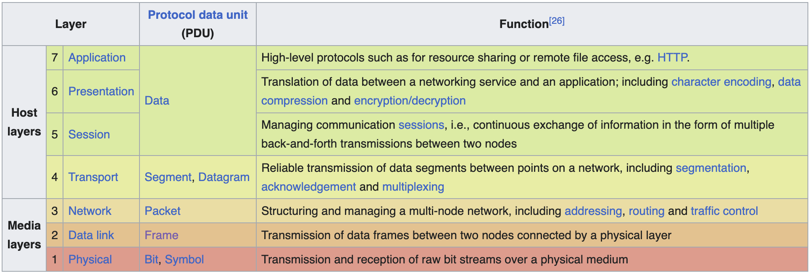
Layer 1 - Physical
Most closely associated with the physical connection between devices. The physical layer provides an electrical and mechanical interface to the transmission medium (e.g. CAT5 cabling, SMF fiber).
Ethernet can travel 100m max distance.
Hardware
- Repeaters
- Extenders
- Hub
- Bridges
Layer 2 - Data Link
This layer is responsible for the Physical Address
Network Interface Card & Media Access Control
- Hardware address, MAC address is burned into the NIC
- MAC Address (Media Access Control ; 48-bits binary (written in hexadecimal))
- 24-bits, first 3 hex numbers vendor identifier (OUI)
- OUI: Organizationally-Unique Identifier
- https://maclookup.app/
- 24-bits, serial number
- 24-bits, first 3 hex numbers vendor identifier (OUI)
NIC Properties
- Speed
- Manually set or auto-negotiate
- mbps (megabits per second)
- Modes
- Simplex - One-way communication
- Duplex - Two-way communication
- Full duplex - simulatenaous send and receive
- Half duplex - one sends, other receives
- Wake on LAN
Operating at Layer 2
| Hardware | Protocols | Software |
|---|---|---|
| Ethernet switch | Ethernet | |
| NIC, Network Interface Card |
Hardware -
- Switches - Concerned with connecting individual computers together
- Switches can example the layer 2 header information on incoming packets and only forward those packets to a specific port
- Intellegence - this physical port is connected to that physical computer
- Switches (1) reduce noise on the network, reduce collisons; thus, improve performance and increase available bandwidth Improves security by only sending packets to specific machines, not all
Two types: managed and unmanaged
Unicast (one device)
Broadcast (all devices)
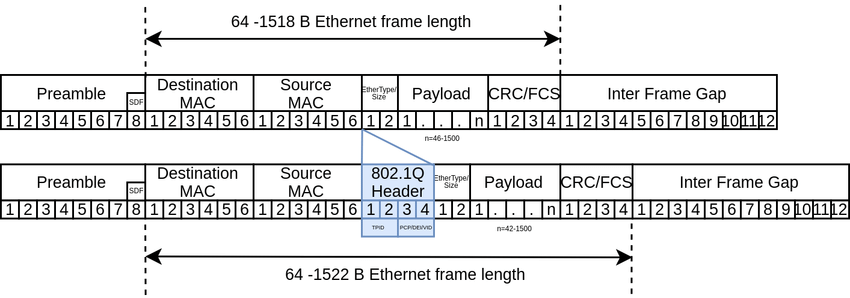 Ethernet Type field, values?
Performance Issues
- Broadcasts (interruptions)
- Server Saturation ()
- Bottleneck (slow connection between devices)
- Router latency
- Security filtering (firewall, packet inspection)
Switches use MAC Addresses
- VLANs reduce broadcast domains
- Switches analyze destination header of a frame and only route the packet out of the appropriate port, not all ports like a hub
- ‘Backbones’ connect switches together
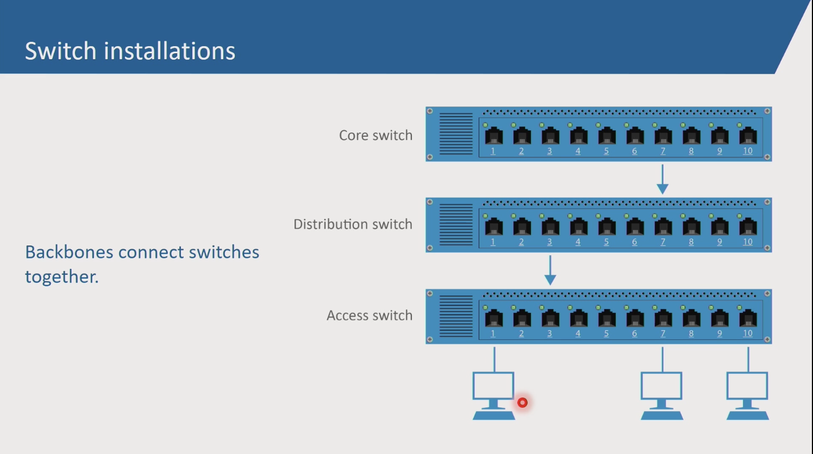 Core switches 10x faster than access switches
lowest port cost
Spanning Tree algorithm 802.1 s
- root switch selection (root switch, forwards all ports) BPDU frames
- best path selection
converged
STP self-healing capability Port mirroring
VLAN
- bandwidth conservation
- security benefits (only aware of devices in their own VLAN)
- separation of a switch to segregate broadcast domains
- Static VLANs (port-by-port basis)
ARP request?
802.1q “tag” a frame VLAN tag, inserted between the source | protocol type tags only seen between switches VLAN trunk port - switch to switch connection frames queued in a buffer to go out the trunk port QoS - for example to voice priority order
IEEE 802.1ax and the link aggregation protocol
Layer 3 - Network Layer
- Logical Addressing (IP Address; software addressing)
- Routing (TCP/IP)
- Prioritization
Operating at Layer 3
| Hardware | Protocols | Software |
|---|---|---|
| Router | IP | |
| ICMP | ||
| Routing |
Hardware -
- Routers - Concerned with connecting networks together.
Routers determine the best route for transmitting data. Do not forward broadcast packets. Routers can communicate with each other and exchange networks that each know s about
Layer 4 - Transport
- Error handling
- Chunk large data into segments
- Port number of application
Operating at Layer 4
| Hardware | Protocols | Software |
|---|---|---|
| TCP | ||
| UDP |
Layer 5 - Session; not used very often
- Session management (conversations)
Operating at Layer 5
| Hardware | Protocols | Software |
|---|---|---|
| RDP | ||
Layer 6 - Presentation; not used very often
- Format conversions (ASCII to another format)
Layer 7 - Application
Sits just below the OS. Supports user applications
Operating at Layer 7
| Hardware | Protocols | Software |
|---|---|---|
| HTTP | ||
| FTP | ||
| SMTP |
Cabling
UTP cabling: unshielded twisted pair Cat 6 - 10 Gbps up to 50 m (this is what we’re using in the SOCC) Numbering System - both ends of fixed horizontal
Cat 5e Cat 6 Cat 6a Cat 7
Ethernet Nomencalture
10Base-T
10 = Mbps Base = T = Type of cabling (in this case, UTP ; twisted pair)
100Base-TX (X = full duplex)
1000Base-SX (Gigabit Ethernet, S = short waveligth over fiber)
10GBase-SR (Cat 6a for datacenters)
40Base-SR4 (almost , fiber)
100Base-SR10 (fiber)
Wifi
radio waves, rather than wired devices light socket, refrigerator, and expanding wireless clients
- IEEE 802.11 standard
- wifi alliance (certify compliance with IEEE standards)
Access point = attena to read radio waves
(Access Point, as translator) 802.11 wireless side, 802 on LAN side
root/infrasture mode for AP
- lightweight AP - uses a WLAN controller software
- Enterprise networks
RF is physical layer of wireless SSID (Service Set Identifier) = differentiates WLANs
wifi - frequency bands 2.4 Ghz or 5Ghz RF bands (unlicenses by FCC) 2.4gHz (11 channels are 5 gHz apart, thus 3 non-overlapsing 1, 6, 11)
802.11a is 5Ghz band National infrasture bands (4 non-orverlapping channels per band) (range is less than 2.4 Ghz) (supports more clients in an area)
Transmission speeds
- 11 Mbps (b)
- 54 Mbps (a)
- 54 (g)
- 600 Mbps (n, 2009) 2.4 & 5Ghz == Mimo
- 6.7 Gbps (ah, 2011)
- 6.9 Gbps, 5Ghz only(ac, 2016)
- 10Gbps (ax, 2019)
Transmission width
- 20 Mhz
- 802.11n - double wide - 40 Mhz
- 802.11ac - MIMO 8 streams - 160 Mhz wide
Wifi Discovery Tools
- Beacon Frame - sent from AP to advertise itself to wifi clients
- Wireless Diagnostics on MacOS
WLAN Security
- ? auth
WLAN Authentication
- Open /
- 802.11i (user auth) (Preshared-Key or 802.1x/ EAP, extensible authentication protocol)
WLAN Encryption
- WEP (wireless encryption), don’t use
- AES-CCMP (advanced encryption standard), WPA2 certification
- TKIP (temporal key ccc protocol), WPA certification
WLAN Performance
- RF physical layer
- (microwaves, cordless phones) - interference
- Environment (walls brick, people)
- distance from AP
- number of clients
References https://www.electronics-notes.com/articles/connectivity/wifi-ieee-802-11/standards.php
https://www.digitalairwireless.com/articles/blog/what-is-a-wireless-bridge
https://www.cablesandkits.com/learning-center/autonomous-vs-lightweight-access-points
IP Addressing and IPv4 Subnetting
Logical Addressing (Layer 3) IP, Internet Protocol Addressing Methods - https://en.wikipedia.org/wiki/Anycast IP is binary. (8 bits of binary in octets, 32 bits in total) - 0 - 255
Dotted Decimal Notation
IPv4 uses 32 bits of binary in total. 8 bits of binary are grouped into octets, separated by a decimal. This format is known as dotted decimal notation. Adding up all bits in each octet equals 255; thus, the range of values for each octet is 0 - 255.
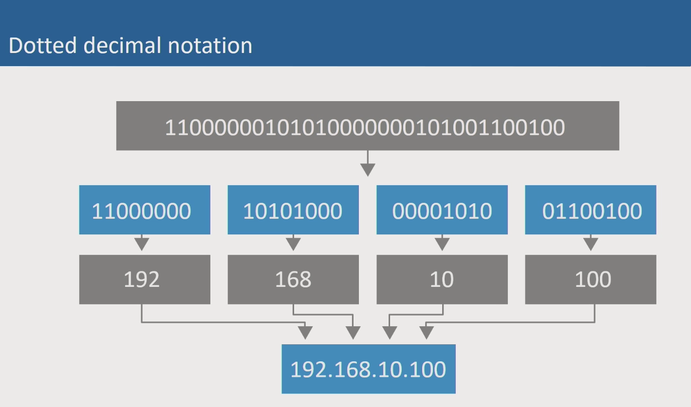
Classful Addresses
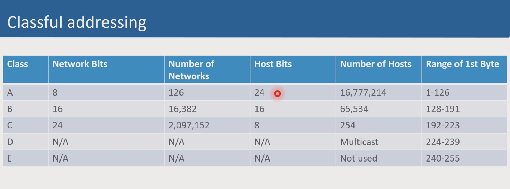
C
Reserved IPv4 Addresses
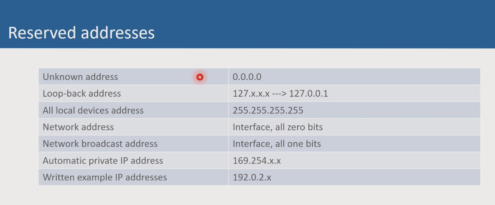
Loop-back can be used to check if the IP stack is functioning Ping yourself! (16 million addresses)
Interface, all 0 bits (network name) Inferface, all 1 bits (broadcast address)
APIPA (automatic private IP address) 169.254.c.c
Private Addresses (also reserved)
Class A private (10.0.0.0) Class B private (172.16.0.0) Class B (192.168.0.0)
Network Mask
‘mask off’ the network part of the address (using 11111111.x.x), reducing the number of bits available for host addresses
| Class | Binary Mask | Decimal Mask | Prefix |
| A | 11111111.00000000.00000000.00000000 | 255.0.0.0 | /8 |
| B | 11111111.11111111.00000000.00000000 | 255.255.0.0 | /16 |
| C | 11111111.11111111.11111111.00000000 | 255.255.255.0 | /24 |
Often converted to a decimal mask 255.0.0.0 or /8
the network mask differentiates the ’network’ bits of an IPv4 address, leaving the remaining bits to calculate hosts addresses.
Network Prefix Class A /8 Class B /16 Class C /24
Can I use the switch (i.e. packet destination is in the same network) Do I need to use a router? (i.e. on another network)
Binary Numbering
| Bit Position | 8 | 7 | 6 | 5 | 4 | 3 | 2 | 1 | ||
| Binary Power | 2⁷ | 2⁶ | 2⁵ | 2⁴ | 2³ | 2² | 2¹ | 2⁰ | ||
| Decimal Value | 128 | 64 | 32 | 16 | 8 | 4 | 2 | 1 | ||
| e.g., calculation | 0 | 0 | 0 | 1 | 0 | 0 | 1 | 0 | = | 18 |
Classless addressing
CIDR (classless interdomain routing)
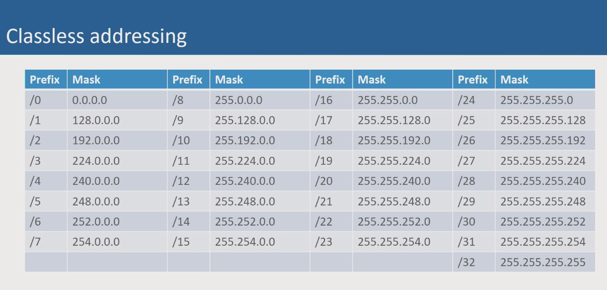
IPv6
128-bit address space Does not use Decimal Notation, Uses Hexadecimal addressing no subnet mask, uses prefix only
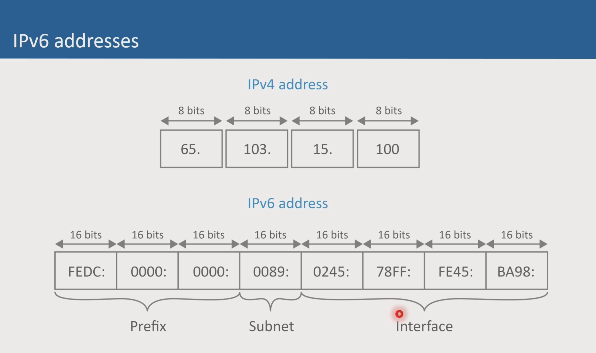
Subnetting
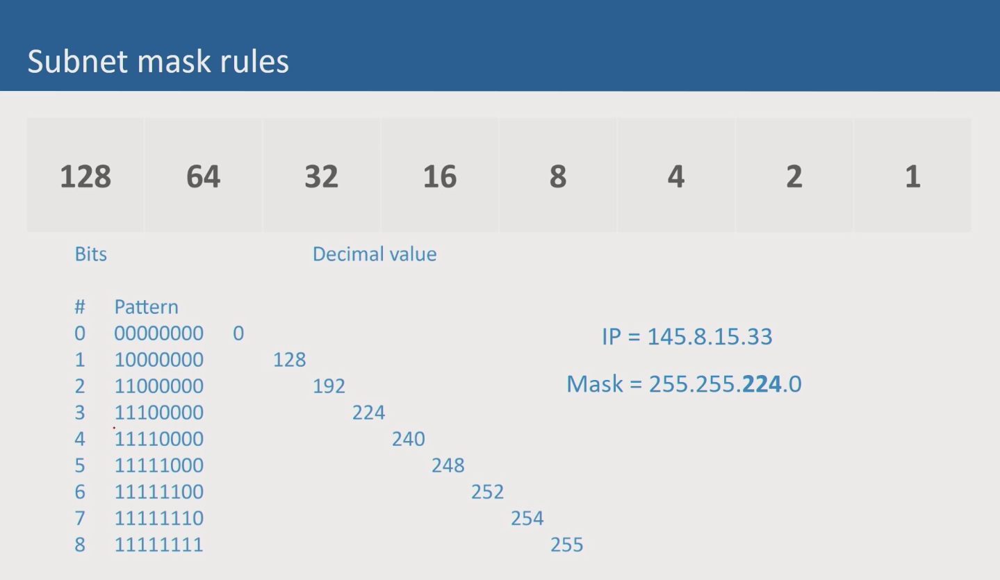
bit budget and binary tables subnetting table
4 key subnet addresses
| Key Address | Binary |
|---|---|
| Subnet | 00000000 |
| First | 00000001 |
| Last | 11111110 |
| Broadcast | 11111111 |
IP subnet calculator
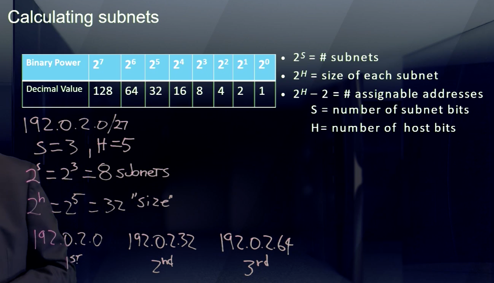
Network Planning
Implementing a network requires an understanding of the business units and the potential for growth of the network in each segment.
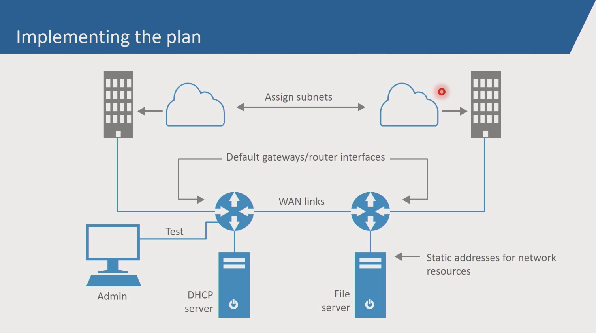
TCP, UDP, Maintenance Protocols
Layer 4 Flow Control TCP / UDP
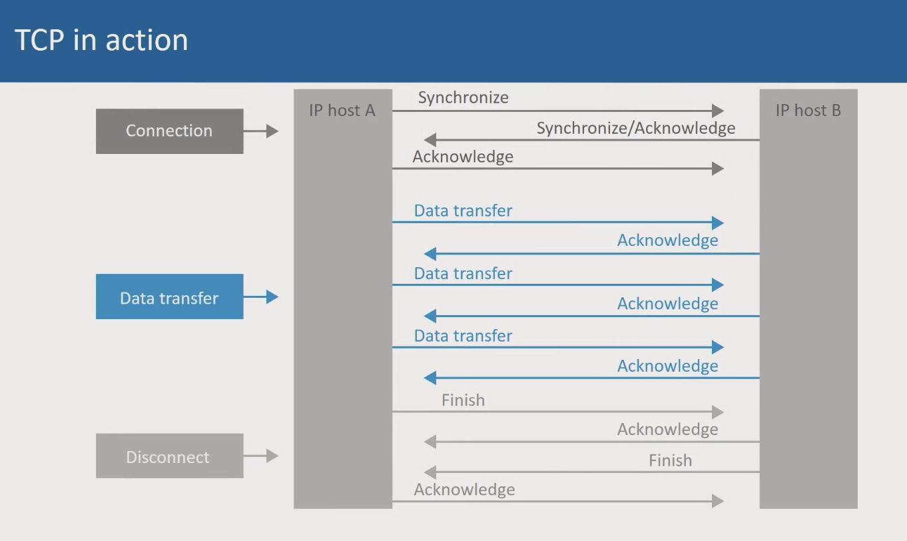
Transmission Control Protocol User Datagram Protocol
Voice and Video (speed is import) FTP (speed not as important, )
Connection Classes
- Connection-Oriented (reliability)
- Connection-Less (speed) [no logical session]
Connectino
Client - initiates connection Server - Accepts request
Connection - Transfer - Disconnect
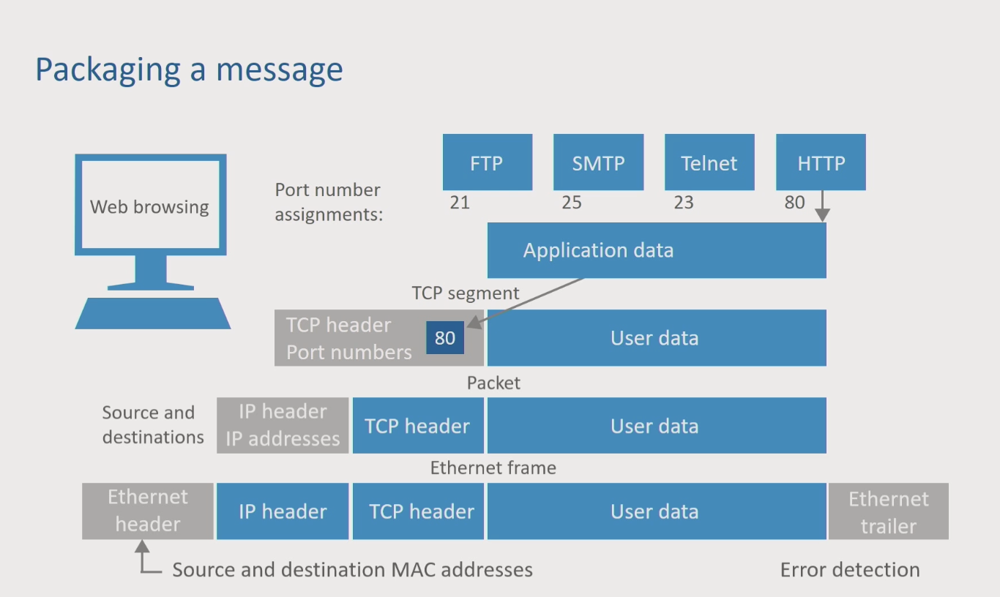
Port Numbering
- RFC 6335, Procedures for the Management of the Service Name and Transport Protocol Port Number Registry
- IANA, Service Name and Transport Protocol Port Number Registry
| Port Ranges | |
|---|---|
| Well Known | 0- 1023 |
| Registered | 1024 - 49151 |
| Dynamic (Private) | 49152 - 65535 |
service multiplexing (multiple applications) 2 byte field - TCP Header
Sockets
Sockets are a combination of IP address and Port number. Sockets allow proper routing and communication of network packets
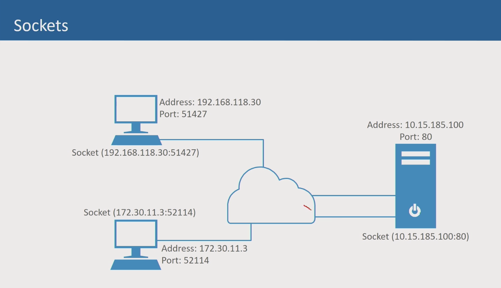
NAT
Router
Router rewrites the TCP/UDP header to allow private IP addresses to travel to the public internet.
NATing allows multiple devices on the private network to use a single public IP address for communications. In the early days, each private device had to have a corresponding public IP address (which is expensive and overwhelming)
NAT Table
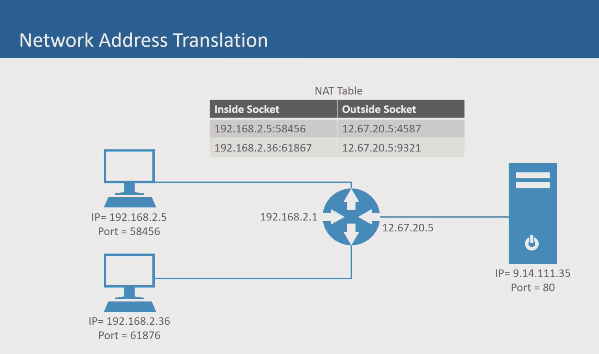
NAT uses Sockets for
NAT table is only updated when packets go out
Support and Management Protocols
- ARP -> method of determining the MAC address associated with a particular IP address, hardware device identification
- Address Resolutoin protocol
- command line
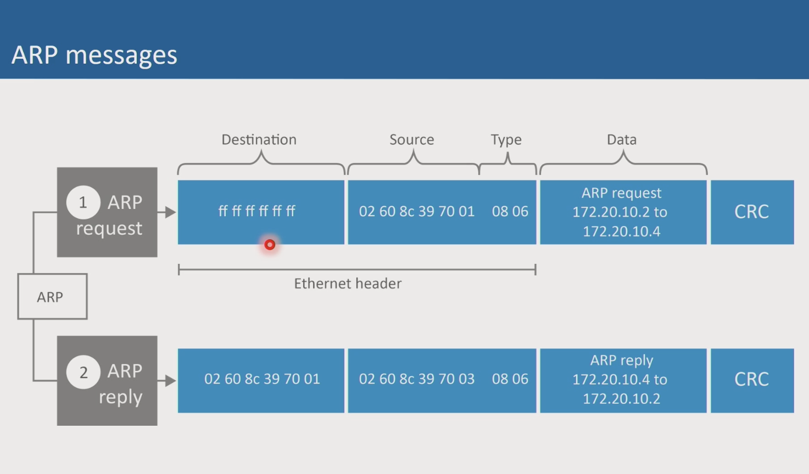
- IGMP
- Internet Group Management Protocol
- Frames sent to multicast address and the group receives it
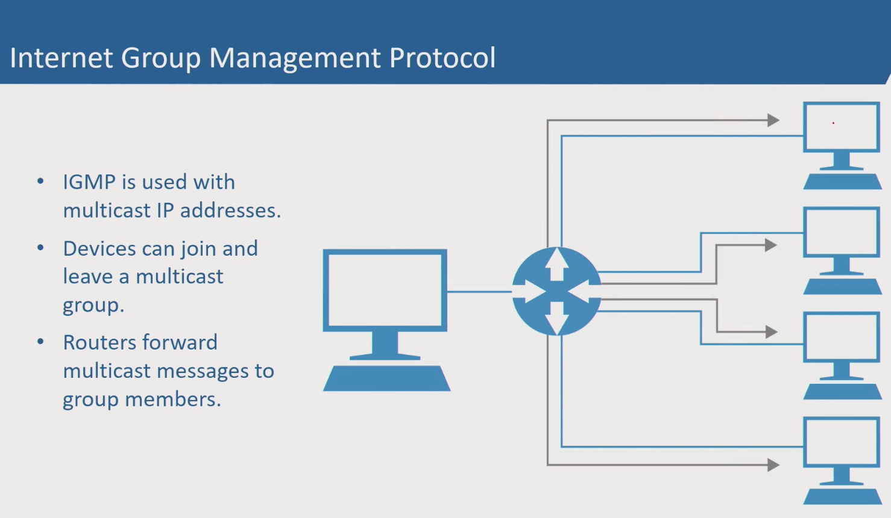
- SNMP
- Simple Network Management Protocl
- Agents - collect statistics about devices
- utilization, throughput,
- SNMP Management station/Console
- HP Openview
- IBM Travolly
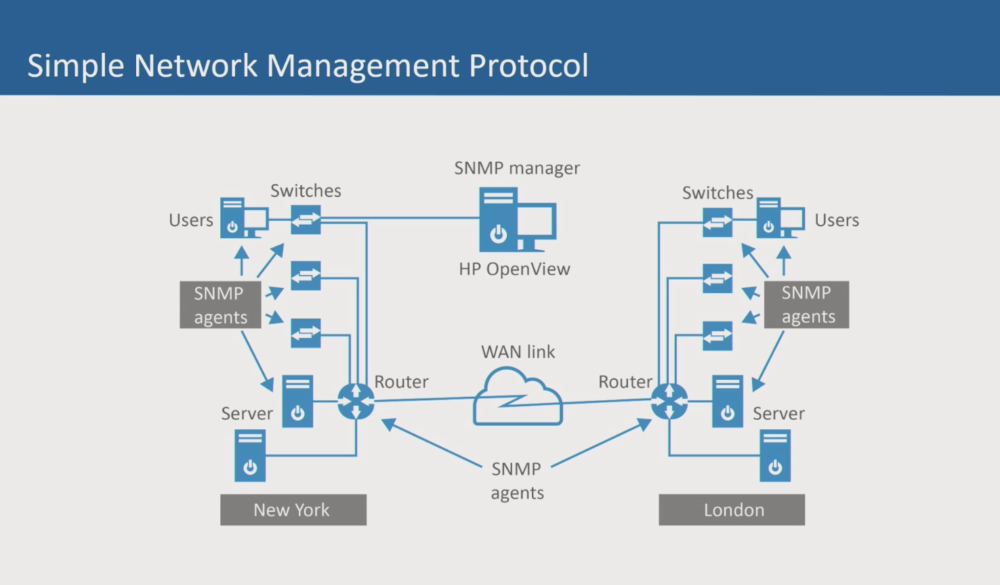
- DNS
- domain name system
- NS.1 = authoritative DNS servers
- DNS Namespace (IANA)
- root
- TLD e.g., .com
- subdomain - globalknowlwdge.com
- hostname - server1.globalknowledge.com
- FQDN -
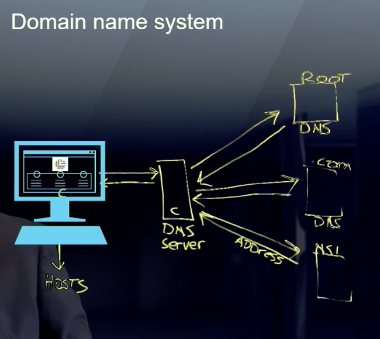
- TFTP
- DHCP - Dynamic Host Configuration Protocol
- ICMP - Internet Control Message Protocol
- Protocol Analyzer
- Common Messages
pinguses ICMP echo request, echo reply- IANA, Internet Control Message Protocol (ICMP) Parameters
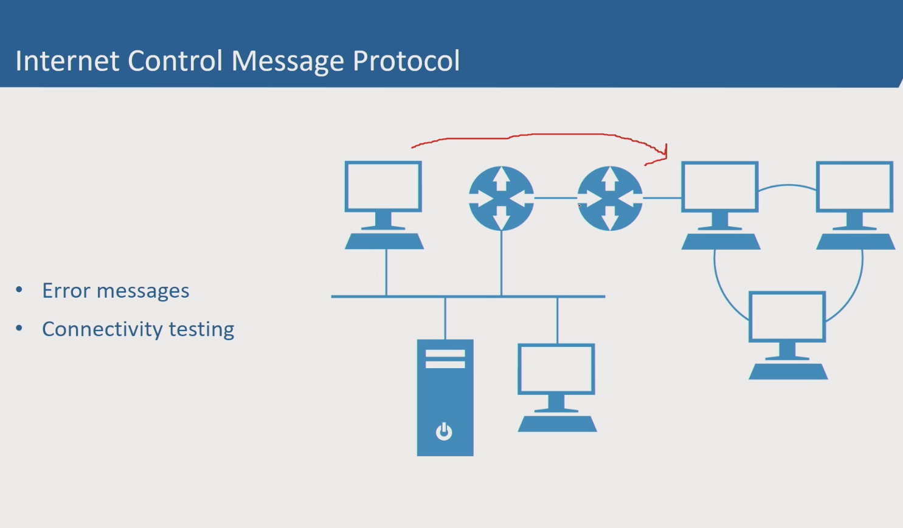
- FTP
- Telnet
- Terminal emulation
- Configure router and switches
Header Type codes (08 06, for ARP)
Routing and Wide Area Networks
Layer 3 - network layer
- one network to another
- one subnet to another
- one vlan to another
Note:
- routers sit on the edge of a domain
- layer 2 broadcasts are not forward by routers
Referred to as ’logical segmentation’ 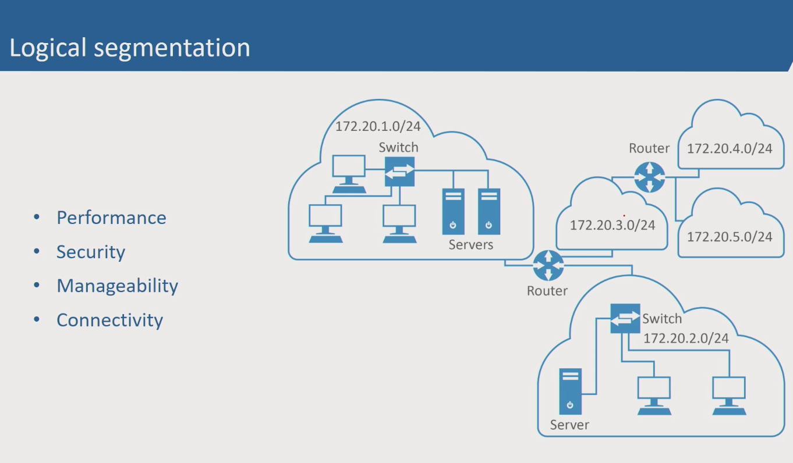
Routing metrics - best pathway
- bandwidth (higher bandwidth is better)
- hop count
- reliability
- arbitrary cost/weights
- delay
Routing Protocols
- RIP
- RIP - Distance-Vector protocol (uses hop count, or number of routets)
- distance-vector
- Maximum 15 hops
- Not suitable for enterprose networks
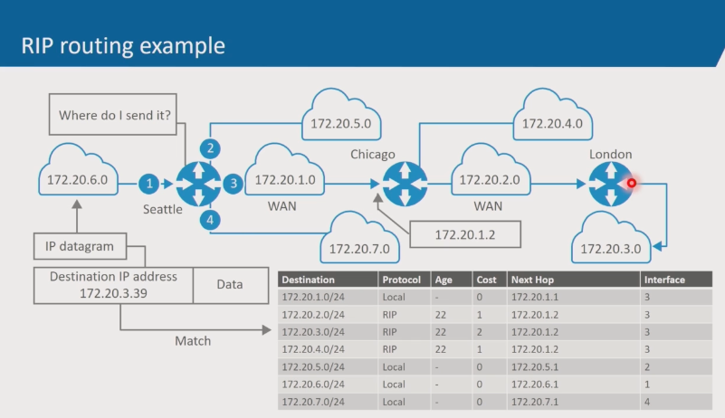
- OSPF (open shortest path first)
- interior gateway routing protocol
- Link-state routing protocol
- EIGRP
- Enhanced Interior Gateway Routing Protocol
- Enterprise network ready
- distance-vector & link-state
- AD -> administrative distance []
- Border Gateway Protocol (BGP)
- exterior routing protocol
- connects between multiple autonoumous systems
Configuring Routers
- IP addresses for each interface
- Which routing protocol
- security features
- user/password
WAN
Connecting LANs together. Point to point circuits. ELINE, ELAN
Packet-switching technology (carries packets) x.25 frame relay ATM MPLS
- customer edge router
- label edge router
- label switching router
- label switched pathway
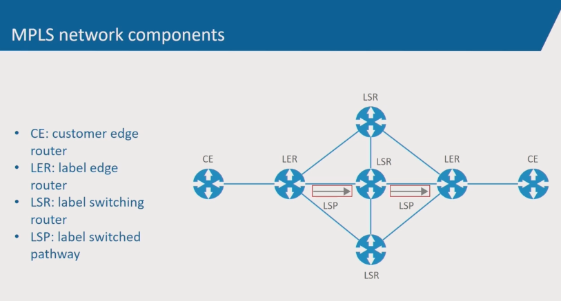 MPLS labels
- label , need a diagram
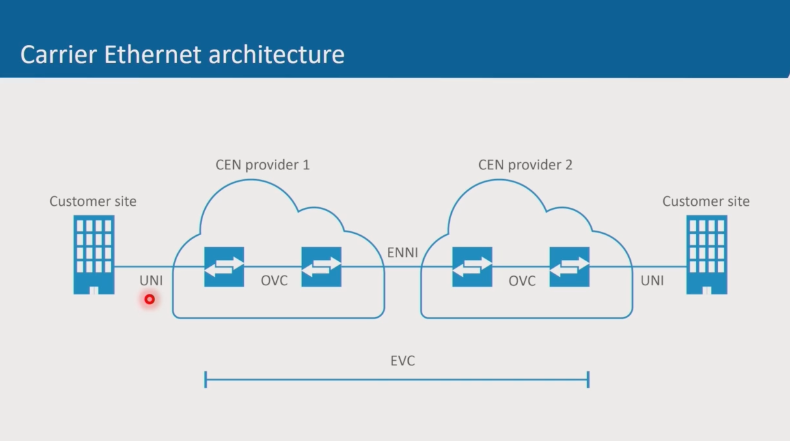 carrier ethernet https://en.wikipedia.org/wiki/Carrier_Ethernet
- “metro ethernet”
- dynamic bandwidth, pay-as-you-go
UNI - user network interface, customer demarkcation point evc - ethernet virtual connection ovc - operator virtual connection cen - enni - extended network network interface
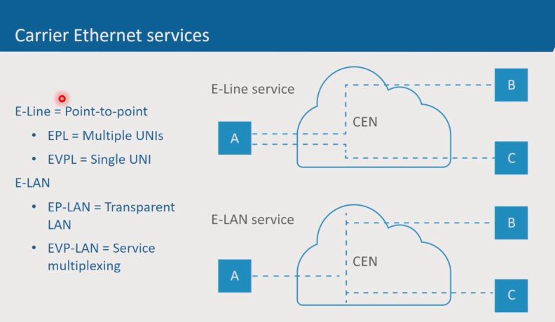 E-Line
- point-to-point
- hub and spoke
- Ethernet Virtual Private Line or E-Line: a service connecting two customer Ethernet ports over a WAN.
E-LAN
- multi-point to multi-point
- Ethernet Virtual Private LAN or E-LAN: a multipoint service connecting a set of customer endpoints, giving the appearance to the customer of a bridged Ethernet network connecting the sites.
EVP-LAN
- Service multiplexing extension of the E-LAN service
EP-LAN
- Single UNI at every customer site
- Provides transparent LAN services
[Internet WANs]
- Residential (oversubscribed, no reliability)
- Small Business ()
- DIA - direct internet access - service-level agreement
Circuit-switching (carries 0,1 bits) T1 TDM - time division multiplexing SONET - synchronous optical networking
- sts
- oc - optical carrier
- dual fiber ring for fault-tolerance
OC 768 OC 1 OC 192 OC 3
Optical Transport networks 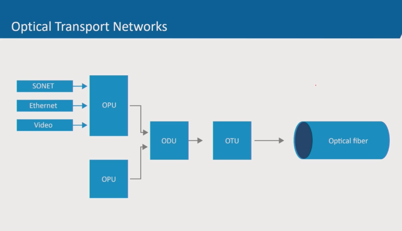
- IP traffic (packets)
- g.709
- OPU - optical payload unit
- optical data unit
- optical transport unit
Web Protocols
Email (user@domain.name)
- user presses send on their email client
- email is sent to their local email server
- local mail server performs a DNS lookup to find the IP address of the receipiants mail server
- local mail server forwards message to receipients mail server
- receipiant mail server extracts the username and places the mail into a folder on the receipent mail server
- receipant user grabs their messages from their mail server
SMTP
simple mail transfer protocol only service to send outbound email port 25
POP3 & IMAP4
used to retrieve email from a mail server to the client
POP3 - post-office protocol “moves” the mail from the server to the client once obtained, removed from server port 110
IMAP4 - internet message access protocol “copies” the mail from the server to the client port 143
Instant Messaging
SIMPLE
SIP for instant messaging and presnce leveraging extensions
RFC 3428 IETF RFCs
XMPP Extensible Messaging and presense protocol RFC 3920
VoIP Voice over IP
Voice is digitized into packets and transmitted across the internet PBX (private branch express)
SIP RTP
SIP
Session initiation protocol
- multimedia session
SIP sets up the connection RFC 3261 https://www.ietf.org/rfc/rfc3261.txt
Request/Response SIP proxy (sip server that tracks the IP of each phone)
RTP
Real-time transport protocol carries voice packets
150 ms or less to eliminate jitter
RTP restores the temporal order of each packet each packet contains about 20 ms of voice data
Media Gateway
Used to translate VoIP to the public telephone swithch system
H.323 https://www.packetizer.com/standards/ ITU protocol
MGCP Media gateway control protocol
Unified Communications
Multiple tech into a single platform
Remote desktop protocls
RDP (Remote Desktop Protocl), windows ICA (Independent Computing Archtiecture), citrix RFB (Remote Frame Buffer)
FTP
File transfer protocol
Malware
- RATs (remote access trojans)
- Keylogger (records keystrokes)
- trojans (appears to be beneficial, but cloaks )
- spyware (monitors user behavior)
Authentication
Verify the identity of a user
- RADIUS
- Kerberos (MIT, Microsoft Windows server)
- PAP
- CHAP
- TACACS
credentials
Proof of identity
- factors (or factiods)
- something you know (maiden name)
- something you have (cards, token)
- something you are (retinal scan)
Firewall (edge devices, perimeter)
- Packet filter (packet header examination, IP address)
- proxy server (intermediary)
- SMLI (stateful multi-layer inspection) - stateful inspection and deep packet inspection
- UTM (unified threat management | combines above)
- personal firewall (on the device connecting to a network)
Hardware
- Port
- IP
- VPN Concentrator
- Honeypot
- Content Filter (can analyze packets)
Software
- application
- Usually only port based
- controls internet access per application
Intrusion detection systems
- IDS (intrusion detection system) -> monitor logs and report to security professionals
- IPS (intrusion prevention system) -> can take action by updating firewall rules during an identified attack
Improved Wireless (https://www.wi-fi.org/)
- WiGig, 60 GHz band, under 10m distance. Cable replacement technology
- HaLow, 802.11ah , 950mhz , low-power wireless connections for IoT
- BLE (bluetooth low energy), 2.4ghz band, only sends small packets to data
- 5G, new antenna technologies, download speeds of up to 10 gbps
Software Defined Networks
Separates control plane from network/switching plane. Remote network devices can pull their configuration from a central control plane device, removing the need to configure each switch individually. This also allows for rapid response to changing network conditions by updating a single control place device.
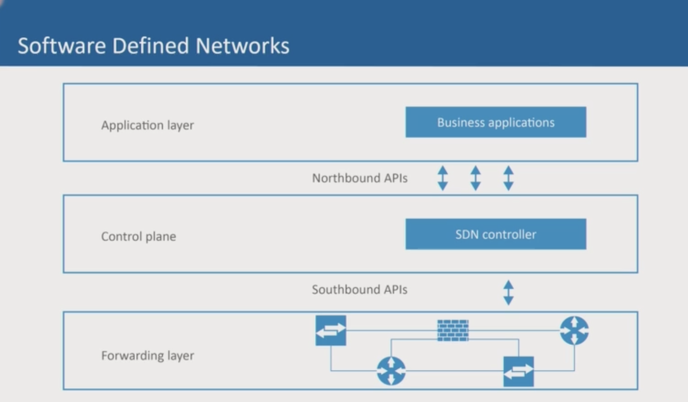
- Application layer (Northbound API), automation of the network for business applications
- Control place (SDN controller), changes to 1000s of device immediately
- Forwarding later (Southbound APIs | [OpenFlow](https://opennetworking.org/sdn-resources/customer-case-studies/openflow/, remove administration of layer 3 packet forwarding tables)
Power over Ethernet (PoE)
802.3bt
On-premise Network Controllers
Wireless backhaul - Communication is tunneled back to the controller
- control plane (instructions, rules, lanes of traffic, stop signs)
- data plane (actual data)
Cloud-based Network Controllers
Backhaul - https://en.wikipedia.org/wiki/Backhaul_(telecommunications)
Access points report back to a virtual controler in the public cloud